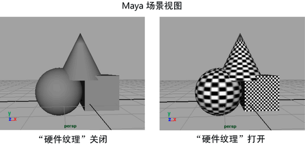

您可以轻松地启用或禁用硬件纹理，支持您查看场景中的近似纹理、灯光和对象。
您所看到的内容取决于 Viewport 2.0 设置和每对象设置。您所看到的内容不一定是最终渲染中显示的内容，但它可以为您提供不错的主意。
在视口中查看纹理、灯光和对象
- 在视口的面板菜单中，选择“着色 > 对所有项目进行平滑着色处理”(Shading > Smooth Shade All)。
- 选择“着色 > 硬件纹理”(Shading > Hardware Texturing)（或按热键 6）。
- 要使用场景中的灯光而非默认照明，请选择“照明 > 使用所有灯光”(Lighting > Use All Lights)（或按热键 7）。
提示：
要在视口中查看分辨率边界，请启用“分辨率门”(Resolution Gate)。有关详细信息，请参见启用或禁用场景视图参考线。